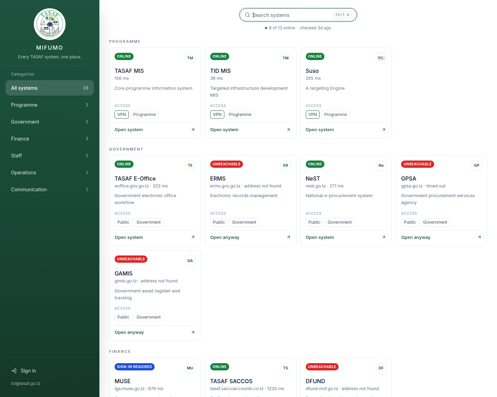
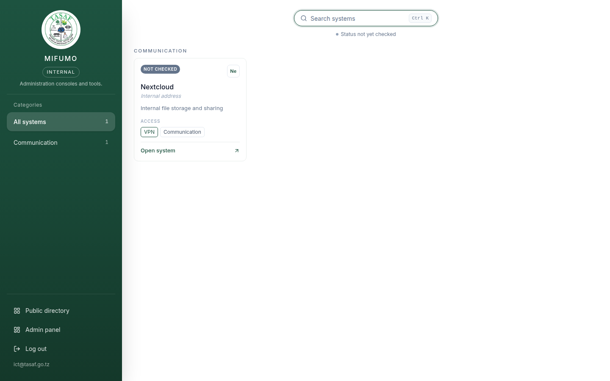
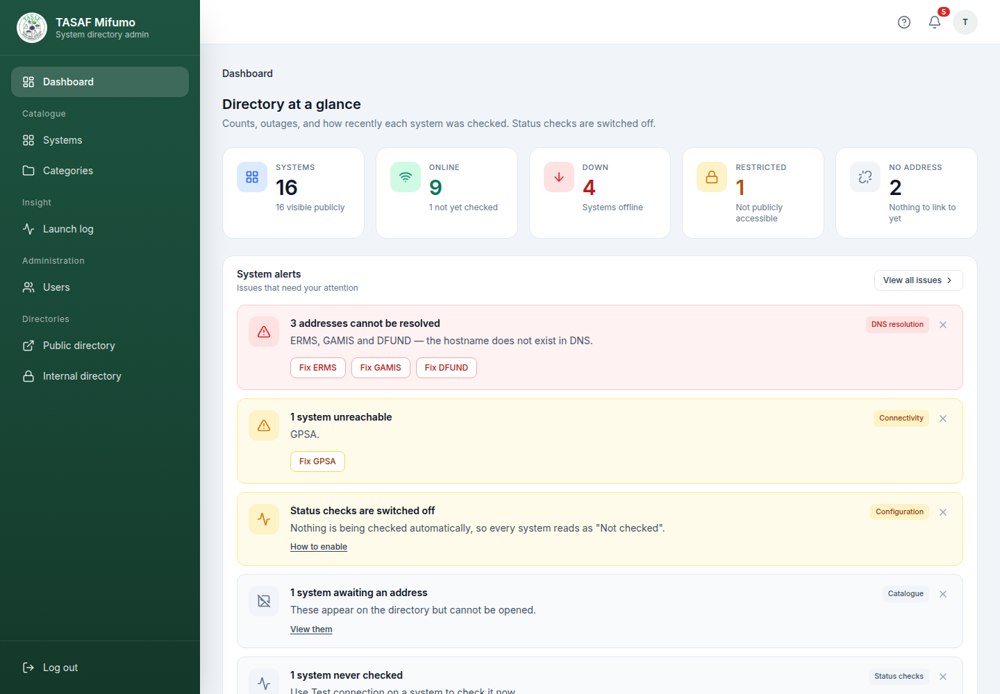
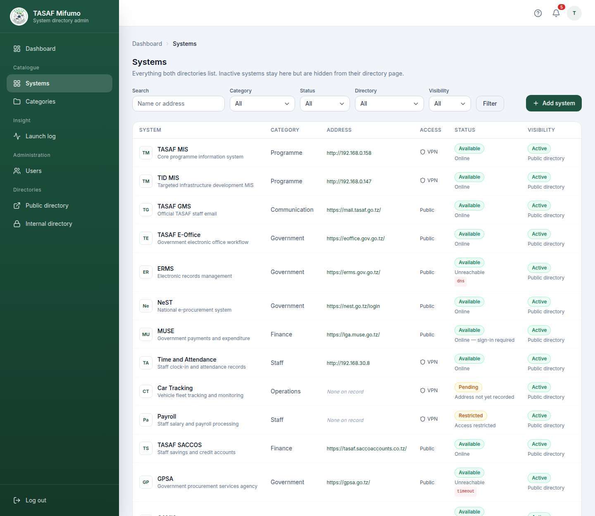
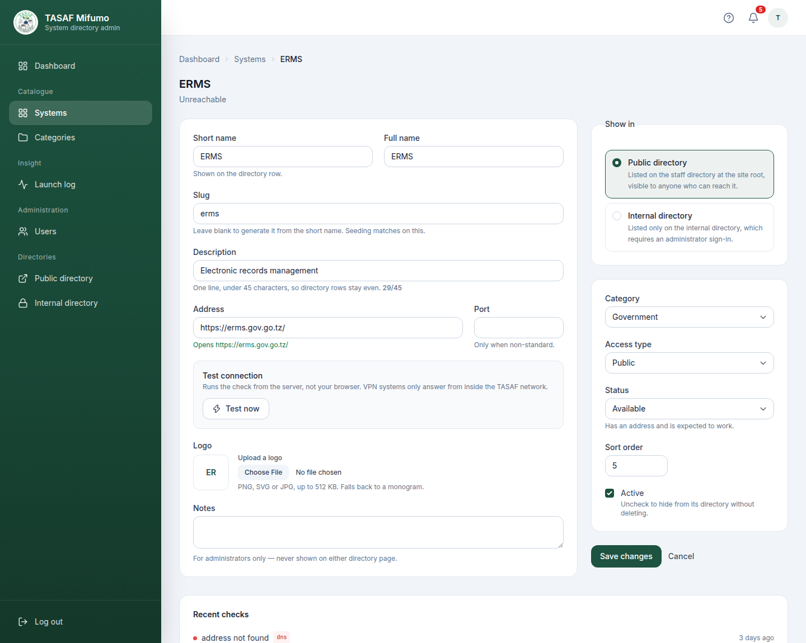
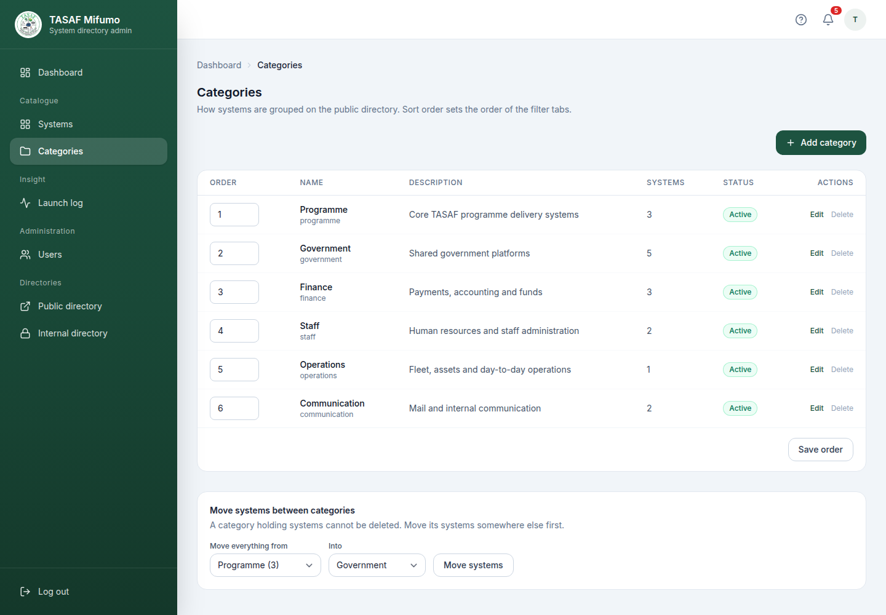
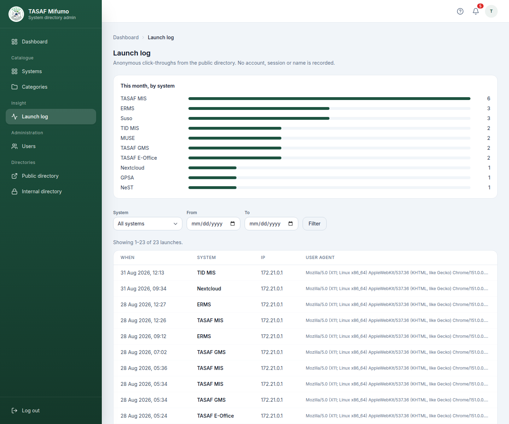

1. Introduction
TASAF Mifumo is the directory of TASAF systems. It answers one question — where is the system I need, and is it working? — and then opens it.
Before Mifumo, the addresses of TASAF systems lived in bookmarks, emails and chat messages, and there was no way to tell a system that was down from one whose address had changed. Mifumo keeps one catalogue, checks the recorded addresses on a schedule, and shows the result on every row.
From Mifumo you can:
- Search every TASAF system by name, description or address.
- See whether a system answered the last check before you try to open it.
- Open a system in a new tab, and return to the ones you use most from the "Recent" row.
- Reach the administration consoles the ICT Unit runs, on a separate signed-in page.
- Install the directory as an app on a computer or phone.
Mifumo holds no beneficiary, payment or programme data, and it does not sign anyone in to the systems it lists. Every system keeps its own login; Mifumo only points at it.
2. The public directory
Open a web browser and type the address of TASAF Mifumo. The directory is displayed. No login is asked for, and nothing on the page identifies you.

The panel on the left lists the categories and how many systems each holds. The cards on the right are the systems themselves, grouped under their category heading. Each card carries the system's short name, its address, a one-line description, a status badge, and how the system is reached.
3. Finding and opening a system
Opening a system
Click Open system on the card, or click anywhere on the card. The system opens in a new browser tab and Mifumo stays where it is. The action at the foot of the card changes with the state of the system:
| Action | Meaning |
|---|---|
| Open system | The system has an address and answered the last check. |
| Open anyway | The system did not answer the last check. The link still works — a check can fail for reasons that do not affect you, most often because it ran from outside the TASAF network. |
| Request access | Access is granted per user and there is no address to open. The action starts an email to the ICT Unit instead. |
A system with no address on record is shown greyed, marked Address not yet recorded, and cannot be opened.
Searching
Type in the search box at the top of the page. The list narrows as you type, matching the short name, the full name, the description, the category and the address. Searching runs inside your browser, so it responds immediately and sends nothing to the server.
Keyboard
| Key | Does |
|---|---|
Ctrl + K | Jump to the search box from anywhere on the page (⌘ + K on macOS). |
↑ / ↓ | Move the highlight through the matching systems. |
Enter | Open the highlighted system. |
Esc | Clear the search and the category filter. |
Filtering by category
Click a category in the left panel to show only its systems, and All systems to go back. Only categories that hold a visible system appear in the panel.
Recently opened
The systems you opened most recently appear as chips under the search box, so the system you use every morning is one click away. This list is kept in your own browser and never reaches the server; the public and internal directories keep separate lists. On a first visit the row is not shown at all.
4. Status badges and what they mean
Every card carries a badge in words as well as colour, so the state is readable without relying on colour alone.
| Badge | Meaning | What to do |
|---|---|---|
| ONLINE | The system answered the last check. | Open it. |
| SIGN-IN REQUIRED | The system answered but refused anonymous access — what a portal behind a login does. | Open it; you will land on its login page. |
| UNREACHABLE | Nothing answered at the recorded address. | Read the address line for the reason, then see §11. |
| RESTRICTED | Access is granted per user by the ICT Unit; there is no address to open. | Use Request access. |
| NOT CHECKED | No check has run yet, or the system has no address on record. | Nothing — an administrator adds the address. |
When a check fails, the card's address line says what went wrong:
| Reason shown | What it means |
|---|---|
| address not found | The hostname does not resolve. The recorded address is wrong, or DNS does not know it. |
| timed out | Nothing answered in time. Usually the network path or the VPN. |
| connection refused | The host is there and refused the connection. Usually the port. |
| certificate error | The HTTPS certificate could not be negotiated. |
| server error | The system answered with an error of its own. |
Above the cards, a summary line reports how many of the checked systems are online and how long ago the last check ran.
Several TASAF systems live on internal addresses and can only be reached from inside the TASAF network or over the corporate VPN. Seen from outside, they are reported as unreachable even when they are perfectly healthy. Such a system shows Unreachable — check VPN rather than a bare failure. Connect to the VPN and try again before reporting an outage.
5. The internal directory
The internal directory lists what the ICT Unit administers rather than what staff work in: consoles, servers, storage and the other services that keep the estate running. It is the same page as the public directory, reading the same catalogue, with the same search, categories and status badges.
It is reached at /internal, or from Internal directory in the
administration panel, and is served only to a signed-in administrator or editor. A visitor who is
not signed in is sent to the login page.

Show in decides which page lists a system. Access type records how the system is reached once opened. A public system can require the VPN, and an internal console can be reachable without it.
6. Installing Mifumo as an app
Mifumo can be installed on a computer or a phone so that it opens from the desktop or home screen in its own window, without the browser's address bar.
- Chrome or Edge on a computer: open the directory, click the install icon at the right of the address bar, and confirm.
- Safari on a Mac: choose File → Add to Dock.
- Chrome on Android: open the menu and choose Install app or Add to Home screen.
- Safari on iOS: use the share button and choose Add to Home Screen.
Mifumo is a directory of other systems, so it is of limited use with no network. The installed app keeps only its own design files and a short offline notice: the directory itself is always fetched fresh, because it carries a sign-in state and a list that changes. Opened with no connection, the app says it is offline rather than showing an out-of-date list.
Browsers only offer to install a site served over HTTPS. If the install option never appears,
check that Mifumo is being reached over https:// and not plain http://.
7. Signing in
Browsing the directory needs no account. Signing in is for the people who maintain the catalogue and for the internal directory. There is no public registration — an administrator creates every account.
- Go to
/login, or click Sign in at the foot of the directory's left panel. - Enter the email address and password of your account.
- Click Log in. Tick Remember me only on a computer that is yours.
Five failed attempts in a minute lock the account briefly. The page then says how many seconds remain. Wait, then try again — the count clears on its own.
Forgotten password
Click Forgot your password? on the sign-in page, enter the email address of your account, and click Email password reset link. A link arrives by email; opening it leads to a page for choosing a new password. The link can be used once.
The dashboard
A successful sign-in opens the administration dashboard.

Roles
| Role | Can do |
|---|---|
| Administrator | Systems, categories, the launch log, and user accounts. |
| Editor | Systems and categories. Cannot manage user accounts. |
Log out sits at the foot of the left panel and in the account menu at the top right.
8. Managing systems
Open Systems in the left panel. The table lists everything both directories carry, including systems that are hidden from their directory.

Adding or editing a system
Click Add system, or the name of an existing system.

| Field | What to put in it |
|---|---|
| Short name | The name shown on the directory card, e.g. TASAF MIS. |
| Full name | The formal name of the system. |
| Slug | Leave blank to generate it from the short name. Seeding matches on this, so avoid changing it once set. |
| Description | One line, under 45 characters, so every directory row stays one line tall. The form counts as you type. |
| Address | A full URL (https://example.go.tz/) or a bare host or IP (192.168.0.158). Never put a colon and port here. |
| Port | Only when the system answers on a non-standard port. |
| Logo | PNG, SVG or JPG up to 512 KB. Without one, the card shows a monogram built from the short name. |
| Notes | For administrators only. Never shown on either directory page. |
| Show in | Public directory for a system staff work in; Internal directory for a console the ICT Unit administers. |
| Category | The group the card sits under on the directory. |
| Access type | Public or VPN — shown as a chip on the card. |
| Status | Available (has an address and should work), Restricted (access granted per user, no address), or Pending (no address on record yet). |
| Sort order | Lower numbers come first within a category. |
| Active | Untick to hide the system from its directory without deleting it. It stays in this list. |
Testing the connection
An existing system's form carries a Test connection panel. Test now runs the same check the scheduler runs and reports the result immediately, which is the quickest way to confirm a corrected address.
Not from your browser. A VPN system will only answer if the server hosting Mifumo is itself inside the TASAF network.
9. Managing categories
Categories are the headings systems are grouped under, on both directories and in the left panel.

A category carries a name, an optional description, a sort order and an active toggle. Deleting a category that still holds systems is refused; move them to another category first.
An inactive category is removed from the directory along with every system inside it, even systems that are themselves active. Deactivate a category only when you intend its whole group to disappear from the directory.
10. The launch log
The launch log records every click-through from the directory, so the ICT Unit can see which systems are actually used.

No account, session or name is recorded — only the system, the time, the IP address and the browser agent string. The log cannot say who opened a system, and is not intended to.
11. Common problems
| What you see | What it usually is | What to do |
|---|---|---|
| A system you know is running shows UNREACHABLE — check VPN. | The check ran from outside the TASAF network. | Connect to the VPN. If the card still says so from inside the network, tell the ICT Unit. |
| address not found on a system that used to work. | The hostname no longer resolves, or the address was recorded wrongly. | An administrator should open the system and use Test connection after correcting the address. |
| A system is missing from the directory. | It is inactive, its category is inactive, or it is on the other directory. | Check the systems list in the administration panel — hidden systems still appear there. |
| Every system shows NOT CHECKED. | Status checking is switched off, or the scheduler is not running on the server. | An administrator should check STATUS_CHECK_ENABLED and the scheduler on the host. |
| The install option never appears in the browser. | Mifumo is being served over plain HTTP. | Reach it over https://. |
| Too many login attempts. | Five failed sign-ins in a minute. | Wait the number of seconds shown, then try again, or use Forgot your password?. |